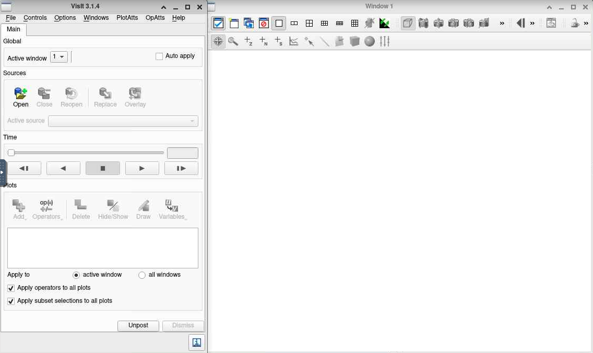
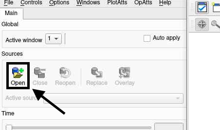
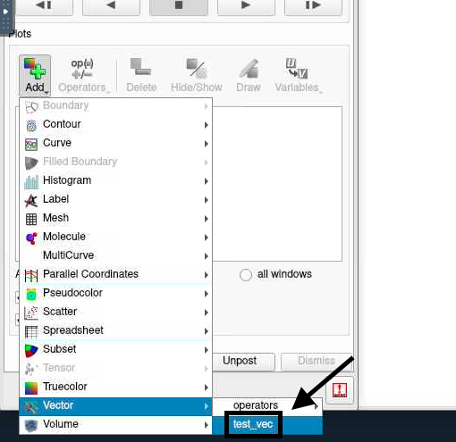
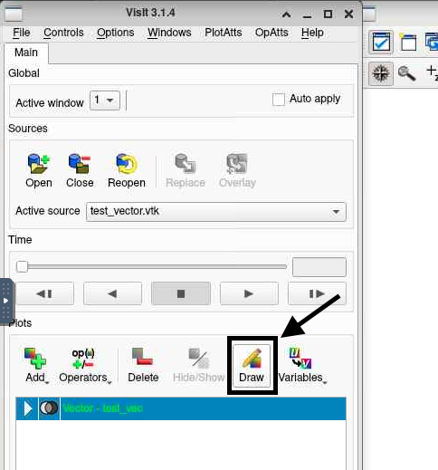
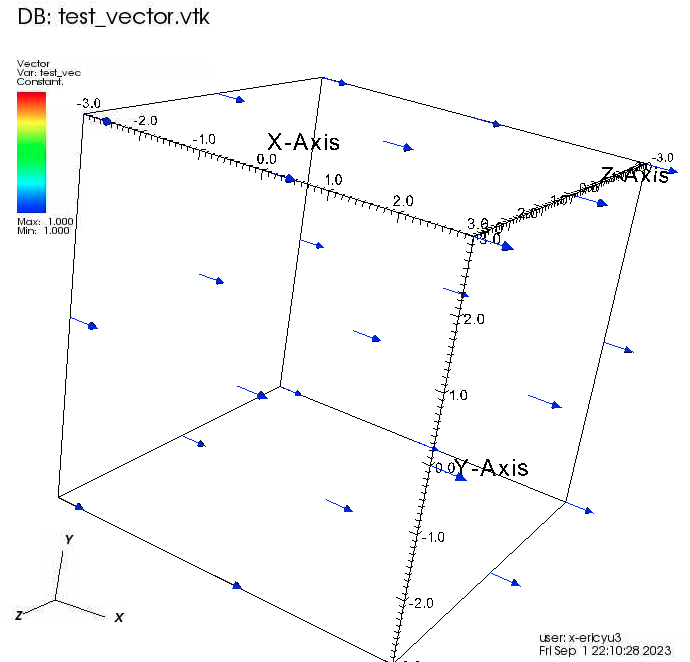
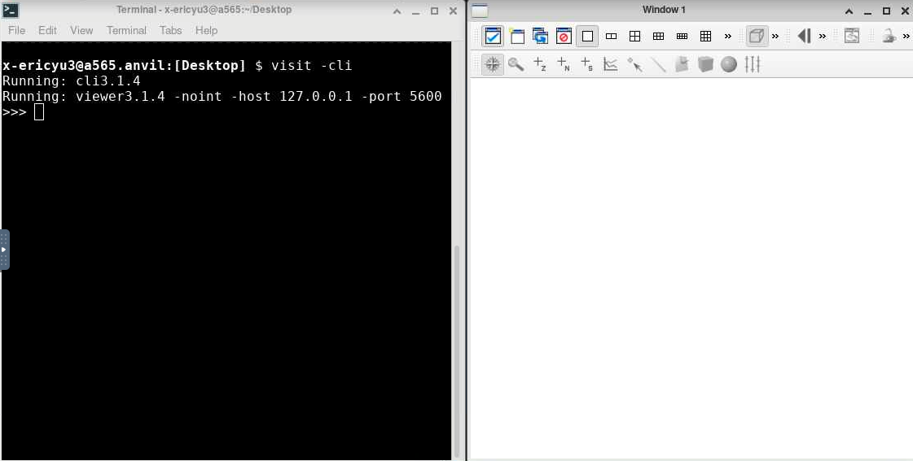
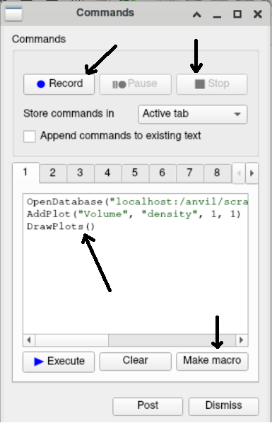

Interacting with VisIT
In this section, we will walk through the steps taken to create a simple visualization using a small sample data file. This visualization just serves as an introduction to VisIt. The details and justifications for the steps taken will be the content of future sections.
The two primary ways of interacting with VisIt are through the graphical user interface (GUI) and the command line interface (CLI). The GUI is the interface that opens on the desktop when VisIt is launched on a local machine. Naturally, the GUI is more intuitive, but when we want to make many complex visualizations to create a movie out of a numerical relativity simulation, it isn’t very efficient. This is where the CLI comes in, as it allows us to script many of the commands and operations that VisIt performs on the data, allowing for quick manipulation and automation of visualizations that have many moving parts. A typical workflow in numerical relativity visualization involves experimenting in the GUI on a single frame to fine-tune certain settings before automating the process using scripts that interact with the CLI and visualizing an entire movie.
Below, we provide instructions on how to make a simple visualization using the GUI and the CLI.
We use a sample VTK file that contains vector field data on a 3 × 3 × 3 grid. The values for the
vector field $v1 , v2 , v3$ at each of the 27 points are specified after the header. The specifics of the VTK
file format and the data aren’t important here and will be discussed in detail in Sec. 4.1.2. The first
few lines of test_vector.vtk — which can be found at VisIt-Guide/sec 3/test vector.vtk —
are shown in Code Lst. 3 below.
1 # vtk DataFile Version 3.0
2 test_vector_field
3 ASCII
4 DATASET STRUCTURED_POINTS
5 DIMENSIONS 3 3 3
6 ORIGIN -3 -3 -3
7 SPACING 3 3 3
8 POINT_DATA 27
9 VECTORS test_vec float
10 1.000000 0.000000 0.000000
11 1.000000 0.000000 0.000000
12 1.000000 0.000000 0.000000
13 1.000000 0.000000 0.000000
14 1.000000 0.000000 0.000000
15 1.000000 0.000000 0.000000
16 1.000000 0.000000 0.000000
17 1.000000 0.000000 0.000000
18 1.000000 0.000000 0.000000
19 1.000000 0.000000 0.000000
20 1.000000 0.000000 0.000000
21 1.000000 0.000000 0.000000
22 1.000000 0.000000 0.000000
23 1.000000 0.000000 0.000000
24 1.000000 0.000000 0.000000
25 1.000000 0.000000 0.000000
26 1.000000 0.000000 0.000000
27 1.000000 0.000000 0.000000
28 1.000000 0.000000 0.000000
29 1.000000 0.000000 0.000000
30 1.000000 0.000000 0.000000
31 1.000000 0.000000 0.000000
32 1.000000 0.000000 0.000000
33 1.000000 0.000000 0.000000
34 1.000000 0.000000 0.000000
35 1.000000 0.000000 0.000000
36 1.000000 0.000000 0.000000
Code Listing 3: test_vector.vtk
Interacting with VisIT GUI
On a local machine, the user can launch the VisIt GUI either by running the executable file (for Windows and Mac) or by running the VisIt executable from the terminal (for Linux). On a supercomputer, please refer to the machine’s documentation, since X11 forwarding or a VNC client of some sort is required. Many supercomputing systems also have an associated OnDemand interface in which users can access the supercomputing resources through website interface. Depending on the support of the OnDemand interface, the supercomputer may allow you to access the supercomputing resources through a desktop interface, allowing the users to access the VisIt GUI Interface. After successfully launching the GUI, we are introduced to the standard VisIt layout (Fig. 6).

Figure 6: Standard VisIt Layout
We will now walk through the steps we will need to take to make a first visualization in VisIt.
First, download the data file test_vector.vtk to the same machine VisIt is being run on. To plot
the data in VisIt, we will need to open the file as a database. We can do this by clicking the Open
button at the top of the left panel in the VisIt layout (Fig. 7).

Figure 7: Open Database in VisIt GUI
A file explorer will open up. Navigate to where we downloaded test_vector.vtk, select the
file, and click open. Now that the database is opened, we can create a plot. Since the sample
database contains vector field data, we will create a vector plot. Click the Add button to bring up
a dropdown menu of all the available plots. At the bottom of the list, hover over the Vector plot
option and click test_vec, which is the custom name for the vector field contained in the database that we just loaded. Then click the Draw button to create the plot


Figure 8: Add vector plot and draw plot in VisIt GUI
After clicking Draw, the plot will load before appearing in the right panel of the standard VisIt layout. We can click and drag the plot to change its orientation. The plot should look similar to Fig. 9. As we can see, the vector field contained in the sample data file is a constant vector field that points in the +x̂ direction.

Figure 9: Sample Vector Plot in VisIt GUI
Interacting with VisIT CLI
We will now replicate the plot we made in the previous section using the CLI. To launch VisIt in CLI mode, we add the -cli flag when launching VisIt.
visit -cli
After doing so, the right panel of the standard VisIt layout will open, and the command line interface will open in the terminal (Fig. 10).

Figure 10: VisIt CLI Layout
>>>OpenDatabase("/path/to/test vector.vtk")
>>>AddPlots("Vector", "test vec")
>>>DrawPlots()
After doing so, the same plot that we created in the GUI (Fig. 9) will render. As with the GUI, we can drag the plot to change its orientation.
With VisIt CLI, we can also make visualizations and save them to image files without opening a VisIt window. To do this, we will need to launch VisIt with the -cli and the -nowin options.
visit -cli -nowin
To recreate the plot and save it to an image in -nowin mode, type the following lines into the CLI.
1 >>> OpenDatabase("/path/to/test_vector.vtk")
2 >>> AddPlots("Vector", "test_vec")
3 >>> c = View3DAttributes()
4 >>> c.viewNormal = (1.5, 0, 1)
5 >>> c.viewUp = (0, 0, 1)
6 >>> SetView3D(c)
7 >>> s = SaveWindowAttributes()
8 >>> s.format = s.PNG
9 >>> s.outputToCurrentDirectory = 1
10 >>> s.fileName = "/path/to/output"
11 >>> SetSaveWindowAttributes(s)
12 >>> DrawPlots()
13 >>> SaveWindow()
In the -nowin mode, we specify the View3DAttributes() to change the orientation since we
cannot drag the plot around. The viewNormal vector specifies a vector from the origin to the
camera, and the viewUp vector specifies the top of the camera (see Fig. 38, Sec. 4.5). We also need
to specify the SaveWindowAttributes() since we are saving the plot to an image file (see Sec. 4.5).
The /path/to/ points to the folder where you want to save your output images. After saving the
plot to an image, we can exit the visit -cli -nowin environment and return to the terminal by
pressing Ctrl+C.
Instead of typing these commands one by one in the VisIt CLI, we can also use Python scripting
which is much more efficient (especially when we are making a large amount of visualizations for a
movie). To do this, we create a run.py VisIt script like the one shown in Code Lst. 3.2, which can
be found at VisIt-Guide/sec_3/run.py
1 OpenDatabase("/path/to/sample_vector_field.vtk")
2 AddPlot("Vector", "vec_field")
3
4 v = VectorAttributes()
5 v.scaleByMagnitude = 0
6 v.autoScale = 0
7 v.scale = 2.0
8 v.minFlag = 1
9 v.maxFlag = 1
10 v.min = 0
11 v.max = 1e-8
12 v.colorTableName = 'hot'
13 v.nVectors = 1000
14 SetPlotOptions(v)
15
16 c = View3DAttributes()
17 c.viewNormal = (1.0, -1.0, 0.35)
18 c.viewUp = (0, 0, 1)
19 SetView3D(c)
20 s = SaveWindowAttributes()
21 s.format = s.PNG
22 s.outputToCurrentDirectory = 1
23 s.fileName = "/path/to/output"
24 SetSaveWindowAttributes(s)
25 DrawPlots()
26 SaveWindow()
Code Listing 3.2: run.py
Then we can run the script directly from the terminal.
visit -cli -nowin -s run.py
where the -s flag indicates that VisIt will use the run.py script. Documentation for the VisIt CLI can be found on their website and can be very helpful, but it is not comprehensive. Thankfully, the VisIt GUI provides a tool that converts actions taken in the GUI to a CLI script. In the toolbar, navigate to Controls → Command . . . which will open up a window as seen in Fig. 11. Within this window, we can start by pressing the Record button and performing any GUI commands. After we have completed any GUI commands that we would like to map onto the CLI counterparts, we can click ■ Stop and the corresponding CLI commands will be displayed within the command box within the middle of the window. If we would like to create a CLI command file in which we could automate any repetitive commands, we could use the Make macro functionality in order to create a CLI command file to run. This can be especially useful to the user when trying to automate the visualization process if a particular visualization command might be difficult to code, as this feature will auto fill the corresponding GUI command into the CLI code.

Figure 11: VisIT GUI to CLI window